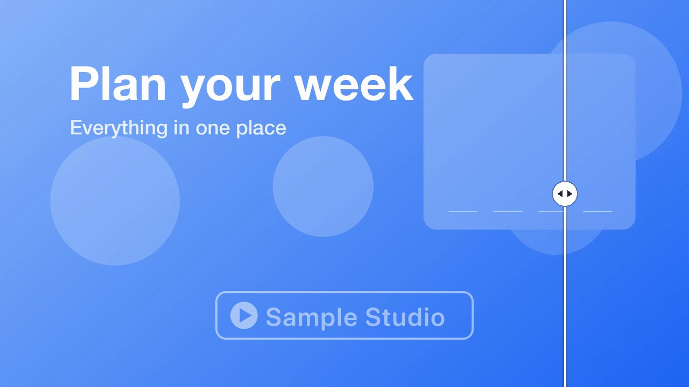
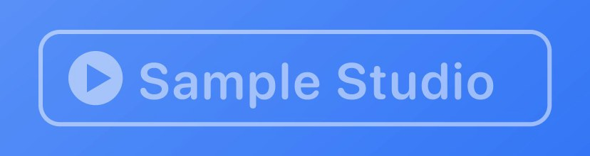
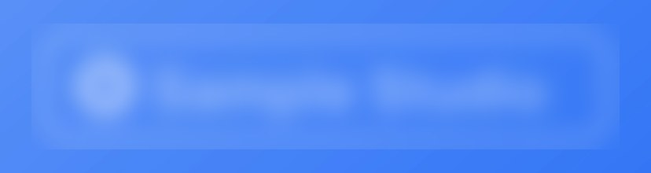
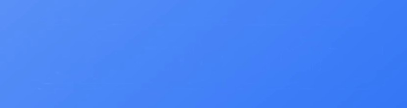
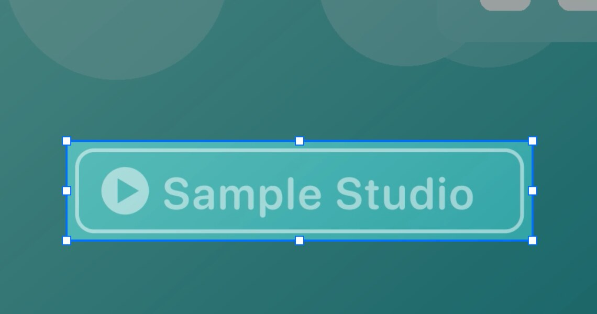
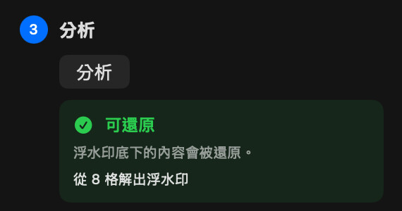
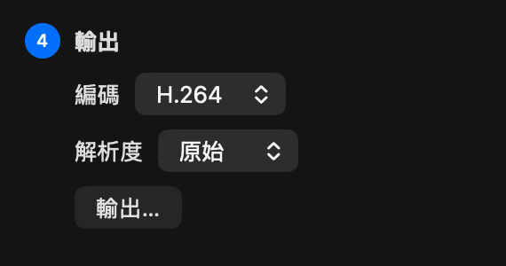
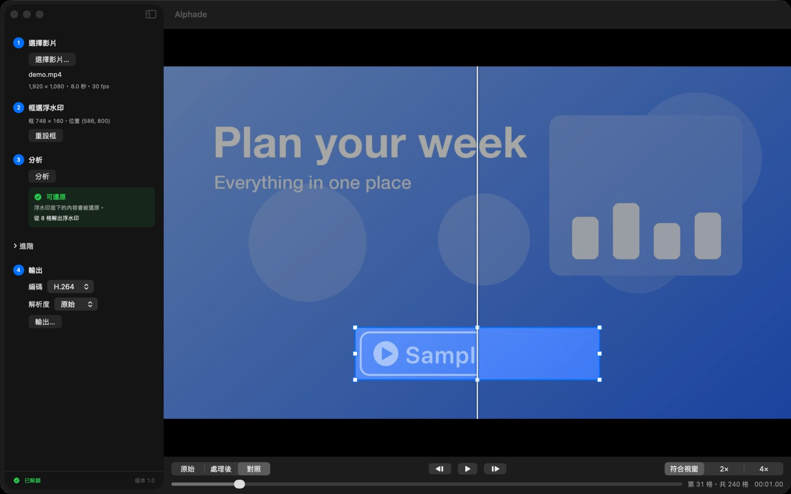

框選浮水印
開啟影片，在浮水印周圍拉一個框。
Alphade 能去除影片裡的半透明浮水印，把底下原本的畫面還原回來，全程在你的 Mac 上完成。
即將在 Mac App Store 推出
免費試用 · 一次買斷 · macOS 26 以上

原片 Alphade還原，不是糊掉
把浮水印模糊掉，只會留下一塊糊糊的痕跡。Alphade 會算出浮水印在每一格是怎麼疊上去的，再把它反推回去，底下原本的畫面就乾乾淨淨地回來了。



使用方式

開啟影片，在浮水印周圍拉一個框。

Alphade 會分析整支影片，告訴你能還原到什麼程度。

輸出乾淨的影片，格式可選 H.264 或 HEVC，保留原始尺寸或縮小。
輸出之前
原片和結果可以左右對照，也能逐格檢視、放大到 4 倍。只有框起來的區域會改變，其他畫面和聲音都原封不動。

不會上傳任何東西，也不需要註冊帳號，Alphade 不收集任何資料。詳見隱私權政策。
分析和預覽都免費，一次購買就能解鎖輸出，不是訂閱。